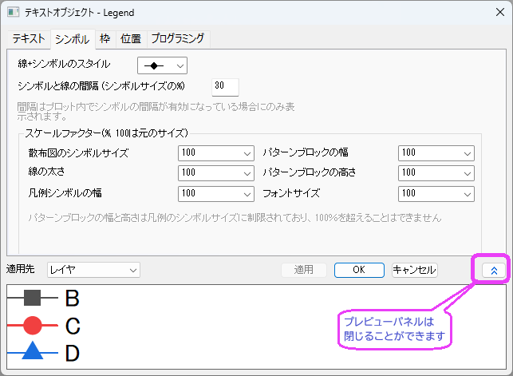
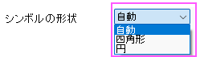
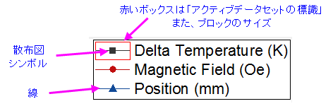

(テキストオブジェクトプロパティ)シンボルタブ
TextOb-Prop-Symbol-tab

グラフの凡例は単に特殊なテキストオブジェクトです。テキストオブジェクトがグラフ凡例の場合、テキストオブジェクトプロパティダイアログボックスにシンボルタブが追加されます。
線+シンボルのスタイル
線+シンボルグラフで、凡例内の線とシンボルの形式を決定するためにこの設定を使用します。折れ線グラフ、散布図、列/棒グラフの場合、この設定は凡例表示には影響しません。
シンボルの形状
この設定を使用して、凡例ボックスにシンボルを表示する方法を決定します。

- 自動：プロットスタイルに従ってシンボル形状を表示します。デフォルトでチェックが付いています。
- 正方形：シンボルを「正方形」として表示します。デフォルトのサイズは15で、スケールファクターグループの散布図シンボルサイズオプションを使用してスケール係数を変更できます。
- 円：シンボルを「円」として表示します。デフォルトのサイズは15で、スケールファクターグループの散布図シンボルサイズオプションを使用してスケール係数を変更できます。
Note:
- 折れ線プロットと線 + シンボルプロットでは、「正方形」と「円」は両方とも実線で、プロットラインによって色付けされます。線 + シンボルでは、シンボルの形状が自動に設定されていない場合、 線線+シンボルのスタイルコントロールは効果がありません。
- 散布図の場合、「正方形」と「円」は両方とも実線で、プロットのシンボル色または境界色で色付けされます。
- 棒グラフ、円グラフ、ボックスチャートなどの塗りつぶしパターンを持つプロットでは、「正方形」と「円」の両方が開いており、境界の太さと境界色はプロットのパターン境界と同じであり、塗り色はプロットのパターン色に従います。
_Symbol_tab/700px-Legend_SymbolTab_Shape_Example.png)
シンボルと線の間隔 (シンボルサイズの%)
線+シンボルグラフに適用されます。凡例エントリの線とシンボルの間に間隔を追加します。これを有効にするには、作図の詳細ダイアログボックスのグラフの線タブでシンボル都の隙間が有効になっている必要があります。
スケールファクター(%, 100は元のサイズ)
これらのコンボボックスでは、ドロップダウンリストから数字を選択するか、直接値を入力できます。アクティブデータセットの標識をオンにして、シンボルブロックの最大幅と高さを表示できることに注意してください (グラフページレベルの作図の詳細でまたは、凡例を右クリックして凡例:アクティブデータセットの標識を選択)。

| 散布図のシンボルサイズ
|
- このボックスは100より大きい数を取ります。
- シンボルのサイズは凡例のテキストサイズ(テキストタブ)によって制御されます。フォントサイズを大きくすると、より大きなシンボルサイズを使用できるようになります。
- 線+シンボルプロットと散布図に適用されます。
|
| 線の太さ
|
- このボックスは100より大きい数を取ります。
- 線+シンボルおよび折れ線プロットに適用されます。
|
| 凡例シンボルの幅
|
- このボックスは100より大きい数を取ります。100の場合、実際の幅は作図の詳細ダイアログの凡例/タイトルタブの設定に従います。
- このコントロールはアクティブデータセットの標識の幅を調整するために使用され、内部ブロックの幅は凡例のアクティブデータセットの標識のサイズに制限されます。
- 凡例のテキストサイズを大きくすると(テキストタブ)、アクティブデータセットの標識の高さ/幅が大きくなります。
- 棒グラフや面積グラフプロットなどのブロックスタイルの凡例シンボルや、線 + シンボル、折れ線プロットを使用するグラフタイプにも適用されます。
|
| パターンブロックの幅
|
- このボックスは100より大きい数にはなりません。
- アクティブデータセットインジケータが設定されたら、このコントロールを使用して内部ブロック幅を調整できます。100未満の場合、インジケータ内でブロックの前後に隙間ができます。
- 棒グラフや面積グラフプロットなどのブロックスタイルの凡例シンボルや、線 + シンボル、折れ線プロットを使用するグラフタイプにも適用されます。
|
| パターンブロックの高さ
|
- このボックスは100より大きい数にはなりません。
- このコントロールを使用して、内部ブロックの高さを調整できます。100未満の場合、インジケータ内にパターンブロックの上下に隙間ができます。
- 棒グラフや面積グラフプロットなどのブロックスタイルの凡例シンボルや、線 + シンボル、折れ線プロットを使用するグラフタイプにも適用されます。
|
| フォントサイズ
|
- このボックスは100より大きい数にはなりません。
- このコントロールを使用してフォントサイズの倍率を調整できます。テキストタブでセットされているフォントサイズが18の時、フォントサイズの倍率は50となり、フォントサイズは9となりますが、実際のフォントサイズは18 のままとなります。(テキスト タブか、ツールチップボックスでは)
|
適用先
凡例オブジェクトダイアログボックスで行った編集を他の凡例オブジェクトにも適用します。テキストまたはプログラミングタブで行うような一部の編集は他の凡例オブジェクトに適用されません。
| レイヤ
|
現在のレイヤにのみ適用します。レイヤは1つの凡例オブジェクトしか持てません。
|
| ウィンドウ
|
ウィンドウ(ページ)の全てに適用します。
|
| フォルダ
|
プロジェクトエクスプローラの現フォルダ内全てに適用します。
|
| プロジェクト
|
現在のプロジェクトファイルの全てに適用します。
|